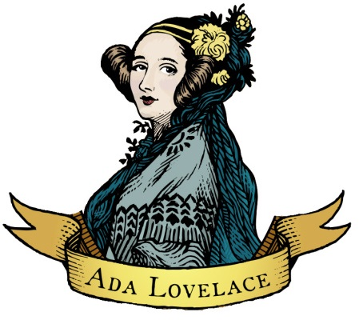

"Quanto mais estudo, mais sinto que minha mente nisso é insaciável".

Augusta Ada King
Condessa de Lovelace
Nascida Byron, 10 de dezembro de 1815 - 27 de novembro de
1852,
atualmente conhecida como Ada Lovelace, foi uma matemática e escritora inglesa.
Ada, Augusta Ada Byron é a única filha legítima do poeta Lord Byron e sua
esposa Anne Isabella "Anabella" Byron.
A mãe de Ada Lovelace sempre incentivou o interesse dela em matemática e lógica. Em sua
juventude, conheceu o matemático britânico Charles Babbage, que logo se tornou seu amigo.
E colaborou com o matemático em seu projeto da Máquina Analítica.
Em 1842 e 1843 Ada traduziu um artigo do engenho militar italiano de Luigi Federico Menabrea sobre a
máquina e complementou com um
conjunto de anotações de sua própria autoria, que ela permaneceu chamando Anotações
Estas notas, que são mais extensas que o próprio artigo de Menabrea, contêm um algoritmo criado
para ser processado por máquinas, o que foi considerado o primeiro programa
de computador.
Ada desenvolveu uma visão sobre a capacidade dos computadores de irem além do mero cálculo
ou processamento de números, enquanto outros, incluindo
o próprio Babbage, focavam apenas nestas capacidades. Sua mentalidade da "ciência poética" a levou a fazer
perguntas sobre a Máquina Analítica (como mostrado
em suas notas) e a examinar como os indivíduos e a sociedade se relacionam com a tecnologia como uma
ferramenta de colaboração.
Aos vinte anos se casou com William Lord King. King foi nomeado Conde de Lovelace em 1838. Por isso, Ada setornou Lady Lovelace.
Ada faleceu muito jovem, com 36 anos, vítima de câncer de útero.
Flyology - " O estudo do voo"
Quando criança, Ada amava máquinas. Aos doze anos de idade, decidiu que
queria voar 🕊,
este tão sonhado desejo lhe traria o apelido de
"Senhora Fada" carinhosamente dado por Charles Babbage.
Ela então focou-se em seu plano, desenvolveu-o com cuidado,
imaginação e amor. Em fevereiro de 1828, Ada
deu seu primeiro passo e decidiu construir um par de asas, algo que
demandou uma pesquisa de diversos materiais, como papéis,
seda a prova dágua, arames e penas. Ela também
estudou a anatomia dos passaros para encontrar a proporção exata
entre o corpo e as asas dos animais, desenhou esboços tetando
contruir sua própria máquina voadora. Ela decidiu escrever
um livro, onde colocou todas as suas anotações, e o chamou de "Flyology",
o "Estudo do voo", que foi ilustrado com suas ideias.
Ela decidiu
que uma bússola para "ataravessar o país pelo caminho mais curto"
e vencer montanhas, rios e vales. Seu
último passo seria juntar o vapor á "arte de voar" 🕊🕊.